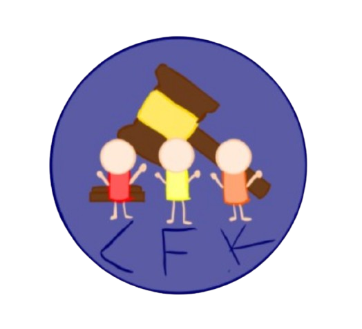

In August 1947, during a game of cricket in Manchester, a ball flew out of the cricket stadium, hitting Miss Stone outside of her house. The High court dismissed the grounds of Miss Stone, claiming there was no negligence due to the incident being isolated to be a nuisance and the lack of incident reports. The Court of Appeal overturned the ruling by the High Court, claiming the club were aware of the risk.
The plaintiff (Miss Stone) argues that a ball being hit at large distance warrants a warning for a passer-by, fixing liability in negligence for her injuries. She also claims the ball was a dangerous object that escaped from the cricket grounds. The defendant (The club committee) argues that the possibility of harm was low and reasonable precautions were taken.
The House of Lords found in favor of the defendant, finding there was no negligence. Most of the Lords considered that the incident was too remote for the reasonable person, with Lord Porter contending that hitting the ball hard was an objective of the game. They also found that while the risk was foreseeable, it was highly improbable.
Bolton v. Stone became a leading case in tort and negligence law, establishing that the defendant is not negligent if the damage to the plaintiff was not reasonably foreseeable. Sports centers and clubs often use this case to contend their safety measures were reasonable relative to the probability of risk.
Year: 1951
Court: House of Lords
Legal Area: Tort (Negligence)
Key Principle: Foreseeability & Standard of Care
Outcome: Bolton (the cricket club) won; House of Lords found no negligence